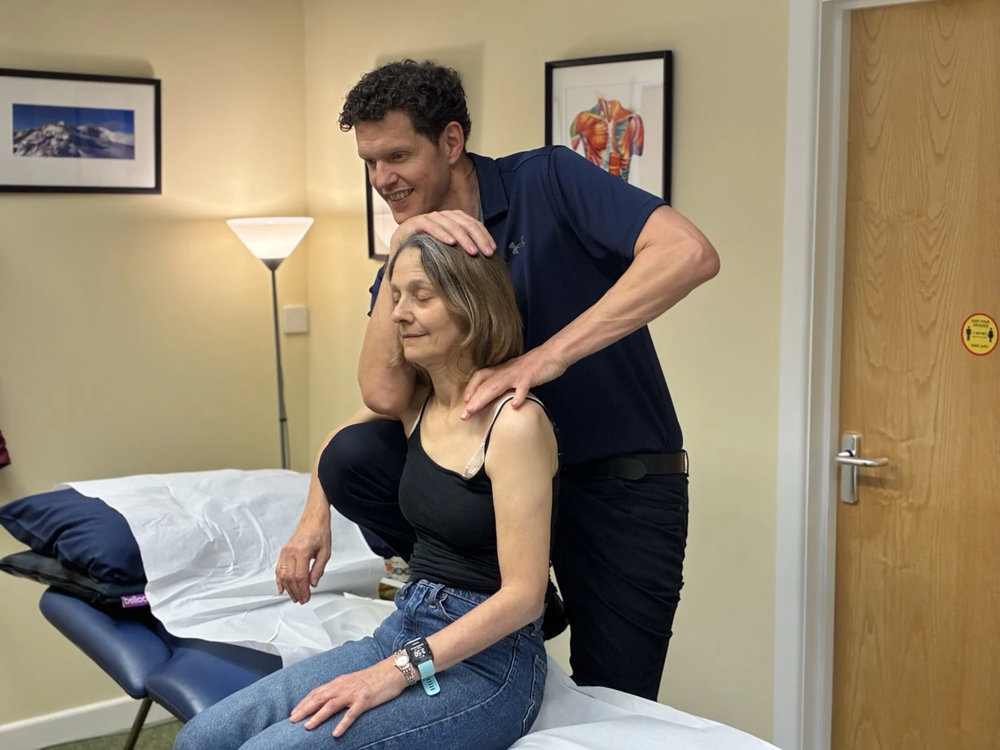
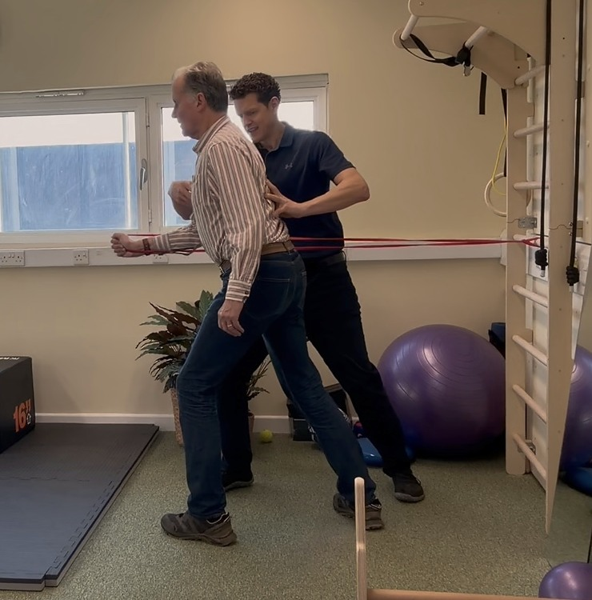

Justin Scriven · Chartered Physiotherapist
Experience matters.
For nearly 30 years, I’ve helped people understand what is happening, find a practical way forward and return to the parts of life that matter to them.
My approach
Good physiotherapy starts with the person.
People rarely arrive with just a painful joint or an isolated injury. They arrive with questions, frustrations, responsibilities and things they want to get back to doing.
My first job is to listen. Then to assess thoughtfully, explain clearly and build a plan that feels realistic for you—not a generic programme or exercise for exercise’s sake.
“The goal isn’t simply to move better. It’s to help you get back to living the life you want to live.”

Experience shaped by different worlds
Nearly three decades of learning.
From the NHS to elite sport and independent practice, each stage has added something different to the way I work today.
- 1998
Bristol
Graduated with a BSc (Hons) in Physiotherapy.
- Early career
NHS · Bournemouth
Built broad clinical foundations working with people across a wide range of conditions and stages of recovery.
- New Zealand
Academy of Sport
Experienced the demands of high-performance sport and the value of careful measurement, progression and preparation.
- Australia
Private practice
Developed a more individual, practical approach to helping people return to the activities that matter to them.
- Since 2003
Independent practice
More than two decades of self-employed practice, bringing clinical experience and personal continuity together.

What it feels like to work together
Listen.
Explain.
Adapt.
Progress.
I want you to feel that you have time to tell your story, that the assessment makes sense, and that you leave knowing what we are working on and why.
- 01A thoughtful assessment, not a rushed checklist
- 02Clear explanations without unnecessary jargon
- 03A plan shaped around your life and priorities
- 04Progress reviewed and adjusted as you improve
Choose your starting point
Two ways I can help.
Both begin with listening carefully, understanding what matters to you and agreeing a practical way forward.

Practising what I encourage
Staying active is about keeping the life you want.
I enjoy tennis and hiking, and understand personally that being active is not simply about fitness. It is about energy, confidence, friendships, challenge and continuing to do the things that make life feel like yours.
That is the spirit I bring to physiotherapy and Physio Life Skills: capable rather than perfect, curious rather than fearful, and always connected to real life.
Let’s find a way forward together.
If you would like help with a current problem—or want to invest in staying strong, steady and capable—I’d be pleased to help.